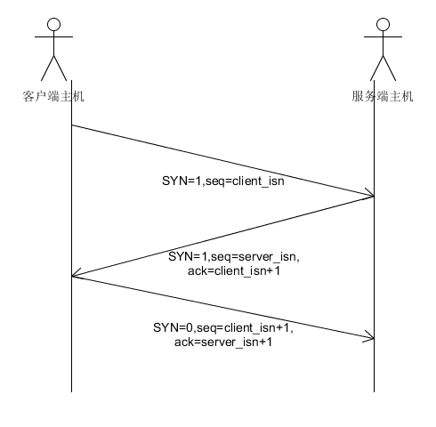

TCP协议是面向连接的，因为在一个应用进程可以开始向另一个应用进程发送数据之前，这两个进程必须先握手。TCP是一种可靠的数据传输模式。
TCP连接提供的是全双工服务(fuu-duplex service)：如果一台主机上的进程A与另一台主机上的进程B存在一条TCP连接，那么应用层数据就可以在从进程A流向B的同时，也从进程B流向进程A。
TCP协议是**点对点(point-to-point)的，即在单个发送方与单个接收方之间的连接。
三次握手
TCP连接的建立过程成为三次握手。之所以成为三次握手，是因为连接的建立需要发送三次报文(客户端2次，服务端1次)。
- 客户机端的TCP首先向向服务器端的TCP发送一个特殊的TCP报文段。该报文段中不包含应用层数据，但是报文段的首部中的一个标志位(SYN)被置为1.因此，这个特殊的报文段被称为SYN报文段。另外，客户机会选择一个其起始序号(client_isn)，并将其放置到该起始TCP SYN报文段的序号字段中。该报文段会被封装在一个IP数据库中，并发送给服务器。
- 当包含TCP SYN报文段的IP数据报到达服务器主机，服务器会从该数据报中提取出TCP SYN报文段，为该TCP连接分配TCP缓存和变量，并向客户机TCP发送允许链接的报文段。在该报文段的首部包含3个重要的信息。首先是SYN比特被置为1.其次，该TCP报文段首部的确认号字段被置为client_isn+1。最后，服务器选择自己的初始序号(serveer_isn)，并将其放置到TCP报文段首部的序号字段中。 这个允许链接的报文段实际上表明了:”我收到了你要求建立连接的、带有初始序号client_isn的SYN分组。我同意建立连接。我自己的初始序号是server_isn。”该允许链接的报文段有时被称为SYNACK报文段。
- 在收到SYNACK报文段后，客户机也要给该连接分配缓存和变量。客户机主机还会向服务器发送另外一个报文，这个报文对服务器的允许链接的报文进行了确认(客户机通过将值server_isn+1放置到TCP报文段的首部的确认字段中来完成此项工作)因为连接已经建立，所以该SYN比特被置为0。

四次挥手
TCP连接的断开需要4次报文的确认。 以客户机发起关闭为例。
- 客户机TCP发送一个FIN比特为1的TCP报文段，并进入FIN_WAIT_1状态。用来关闭客户端到服务端的数据连接。
- 服务机收到该FIN报文，回复一个ACK。
- 服务机发送一个FIN比特为1的TCP报文段，用来关闭服务端到客户端的数据连接。
- 客户端回复一个ACK报文，确认关闭。
为什么握手时三次，挥手需要四次
这是因为服务端的LISTEN状态下的SOCKET当收到SYN报文的建连请求后，它可以把ACK和SYN（ACK起应答作用，而SYN起同步作用）放在一个报文里来发送。但关闭连接时，当收到对方的FIN报文通知时，它仅仅表示对方没有数据发送给你了；但未必你所有的数据都全部发送给对方了，所以你可以未必会马上会关闭SOCKET,也即你可能还需要发送一些数据给对方之后，再发送FIN报文给对方来表示你同意现在可以关闭连接了，所以它这里的ACK报文和FIN报文多数情况下都是分开发送的。